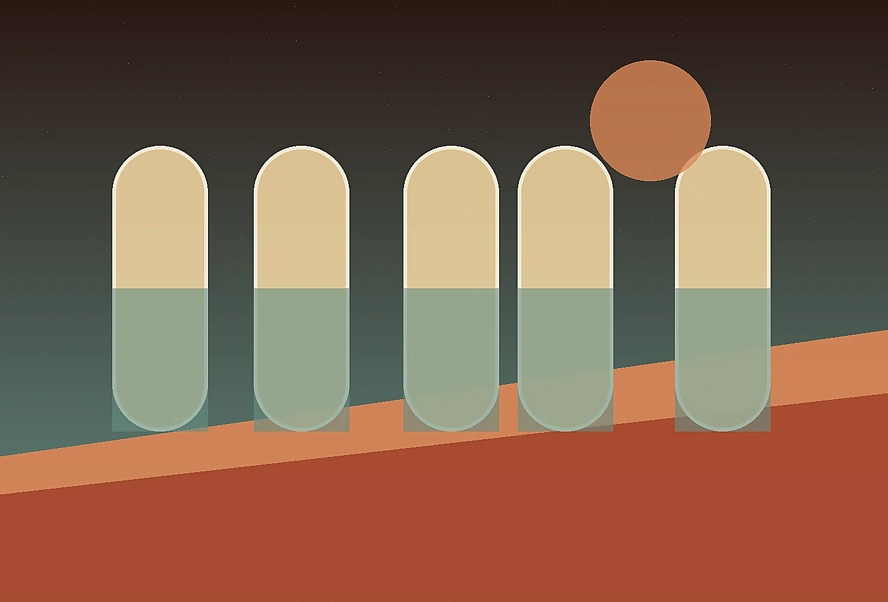

Retreat Concept Direction
We define the emotional arc, spatial language, service tone, and sensory signatures that make a remote hospitality concept memorable.
Explore service
Desert futurist hospitality atelier
Explore the service architecture behind Mirage Loom. Each offer is designed to create visible improvement, durable internal habits, and a client experience that feels intentionally made rather than borrowed.
Design the arrivalMirage Loom offers three core services, each built to move from diagnosis to usable change. We avoid abstract strategy that cannot survive staffing, budget, weather, travel, or governance. The work is collaborative, documented, and direct enough for teams to use without translation.
Some clients need a two-week diagnostic, others need a full concept system or retained advisory during launch. We match the engagement to the decision ahead. Every format includes a clear owner, working cadence, deliverables, and criteria for success.

Recommendations are grounded in interviews, site observation, operational constraints, content review, and prototype response. Taste matters, but unsupported taste is not enough. We show the reason behind each move.
Deliverables may include journey maps, editorial guidelines, implementation checklists, service scripts, spatial notes, asset direction, measurement plans, and decision briefs. Each artifact is written for the people who will actually use it.
Our documents are tactile and operational at the same time. They may describe the feeling of a threshold, the timing of a tea service, the sourcing logic for a blanket, and the maintenance implication of a shaded path on the same page. That blend helps owners protect the emotional promise while making grounded decisions.
We pay close attention to maintenance because remote beauty can become fragile when daily work is ignored. The same concept system that describes guest emotion also names storage needs, cleaning rhythms, replacement materials, staff language, and seasonal adjustments, giving the retreat a better chance to remain graceful under real use.